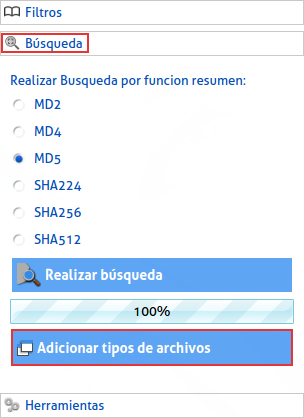

|
Para Adicionar tipos de archivos debemos dar clic en la opción "Búsqueda" en el menú a la izquierda, luego en el botón "Adicionar tipos de archivos", esta opción consiste en escanear su PC, para encontrar tipos de archivos que la aplicación no conoce, este escaneo podrá demorar pero no interferirá con el funcionamiento normal de la aplicación. |
|  |